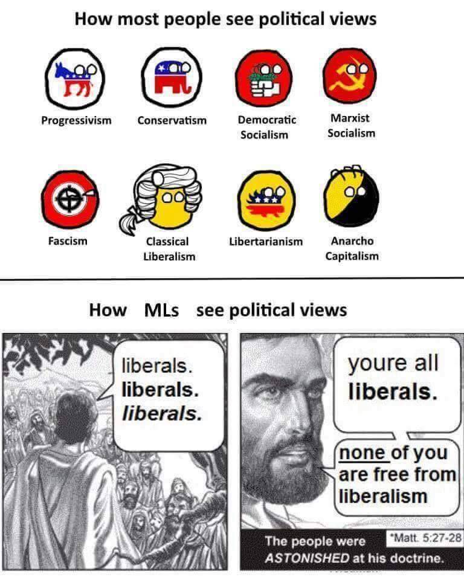

Here’s a nice picture my Communist friend posted on Facebook. In context, ML means Marxist-Leninist.
Honestly, I think that you can probably 4panel this.
Top Left: You’re all liberals, liberals, liberals, none of you are free from liberalism.
Top Right: Demotists…
Bottom Left: Fascists
Bottom Right: Statists
Classical liberals are fascists?
I think the idea is that, to a classical liberal, everyone outside the Comfort Zone looks like some minutely-different species of fascist. That “fascist” is liberal-speak for “Bad Guy.” (Or, more charitably, that to liberal thinking, fascism is the pervasive spiritual virus that makes human society Not A Paradise.)